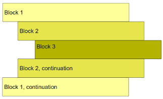

10 If-else
This chapter is about how you make your program do different things under different circumstances. Making functionality dependent on data is what makes programs useful.
If-statement
So far, the small programs you have written run the same sequence of statements (lines). Imagine if you could control which statements were run depending on the circumstances. Then, you would be able to write more flexible and useful programs. Cue the music - and let me introduce the “if-statement”.
Write the following carefully into a file. It is a small program that monitors bus passenger status. Notice the colon ending the if-statements. Also, note that the lines below each if-statement are indented with precisely four spaces. While writing the program, figure out what the if-statement does. Then, run the code and see what happens.
bus_seats = 32
passengers = 20
bags = 20
print(passengers, "people ride the bus")
if bus_seats >= passengers + bags:
print("Smiles, everyone has room for bags")
if bus_seats >= passengers:
print('Everyone gets to sit down, no complaints')
if bus_seats < passengers:
print('Some passengers standing, annoyed')
if bus_seats < passengers / 3:
print("General dissatisfaction, some swearing too")Try changing the values of bus_seats, passengers, and bags and see how the program executes.
You have probably realized that the if-statements control which prints statements that are evaluated. A statement nested under an if-statement is only evaluated if the expression between the if keyword and the : reduces to a value Python considers as true. This does not happen if the expression between the if and : reduces to a value Python considers false.
When asked to evaluate something as true or false, Python will interpret zero and empty values (like 0 and '') as False and all other non-zero and non-empty values as True.
Exercise 10-1
Which of the following letters are printed: A, B, C, D, E, F, G. Make up your mind before you write and run the code.
if 0:
print('A')
if "Banana":
print('B')
if 3.14159265359:
print('C')
if False:
print('D')
if 9 > 5 and 4 < 7:
print('E')
if '':
print('F')
if False or "banana":
print('G')Exercise 10-2
What happens if you forget to write the : in the if-statement?
if 4 > 2
print('Hi!')Exercise 10-3
What happens if you do not indent the code under the if-statement?
if 4 > 2:
print('Hi!')By now, you probably know that your text editor is intelligent regarding indentation. If you hit Enter after a statement ending with
:, it will indent the next line with four spaces. Also, if you use the tab in Python code, it will produce four spaces for you.
FAQ
A: Yes.
Else-statement
Sometimes you not only want your program to do something if an expression reduces to True, you also want it to do something else if it is False. It is as simple as it looks:
cookies = 3
if cookies > 0:
print("Uh, I wonder if we have some milk too...")
else:
print("Sigh!")Remember to put a : after the else keyword. Write the code and change the value of cookies to 0.
Exercise 10-4
Test your understanding about which expressions that reduce to a True or False value. Write the code below and then see how it responds to different values of x. Try to come up with other variations yourself.
x = 0.0
# x = '0'
# x = ' '
# x = ''
# x = not 0
# x = 'zero'
if x:
print('x is substituted with True in the if-statement')
else:
print('x is substituted with False in the if-statement)FAQ
A: No.
Exercise 10-5
What do you think this code prints? Notice how you can nest if and else-statements under other if and else-statements. This way, you can make your program include only some statements when certain combinations of conditions are met. Just remember that the code below each if or else is indented by four spaces. Try to change the True/False values of milk and cookies.
milk = False
cookies = True
if milk:
if cookies:
status = 'Good times!'
else:
status = 'Not thirsty, thanks or asking'
else:
if cookies:
status = 'How does something like this happen?'
else:
status = 'Whatever...'
print(status)Blocks of code
In the examples above, some lines are indented more than others, and you probably already have some idea of how Python interprets this. Indentation defines blocks of code. The if and else statements control each code block’s evaluation when your code runs. The following three rules define individual blocks of code:
- All statements in a code block have the same indentation. That is, they line up vertically.
- A block of code begins at the first line of code at a line that is indented more than the one before it.
- A block ends when it is followed by a less indented line or at the last line of code.
This way, a block can be nested inside another block by indenting it further to the right, as shown in Figure 10.1. Compare the example in Figure 10.1 to the code example above. Note how a colon at the end of a statement means “this applies the block of code below”. Make sure you understand which print statements are controlled by which if and else statements.

Elif-statement
Say you need to test several mutually exclusive scenarios. For example, if a base is equal to A, T, C, or G. You can do that like in the example below, but it is very verbose and shifts your code further and further to the right.
base = 'G'
if base == 'A':
print('This is adenine')
else:
if base == 'T':
print('This is thymine')
else:
if base == 'C':
print('This is cytosine')
else:
print('This is guanine')This is where an elif statement can be helpful. It is basically short for “else if.” The correspondence is hopefully obvious if you compare it to the example below.
base = 'G'
if base == 'A':
print('This is adenine')
elif base == 'T':
print('This is thymine')
elif base == 'C':
print('This is cytosine')
else:
print('This is guanine')Here, we put an else-statement at the end to capture all cases not covered by the if-statement and the two elif-statements.
Exercise 10-6
You can use logical operators (and, or, not) in the expressions tested in an if-statement. Can you change the program from Section 10.0.0.5 so that there are no nested if-statements - in a way that the program still does the same? You can use if, elif, and else and test if, e.g., milk and cookies are true using and.
Exercise 10-7
The snippet of code below has three blocks with three statements. Which statements belong to which block? Which statements are executed?
x = 5
if x > 4:
y = 3
if x < 1:
x = 2
y = 7
z = 1
x = 1
z = 4Exercise 10-8
Can you see four blocks of code? If not, read the three rules above again. Which statements are executed?
x = 5
if x > 4:
y = 3
if x < 1:
x = 2
y = 7
else:
x = 1
y = 9
z = 4General exercises
Exercise 10-9
Will this print You are a superstar!?
if -4 and 0 or 'banana' and not False:
print("You are a super star!")Exercise 10-10
Will this print You are a superstar!?
if -1 + 16 % 5 == 0 :
print("You are a super star!")Exercise 10-11
Assign values to two variables, x and y. Then, write code that prints OK if (and only if) x is smaller than five and y is larger than five. Do it using two if statements:
x = 3 # or something else
y = 7 # or something else
# rest of code here...Now solve the same problem using only one if statement.
Exercise 10-12
Assign values to two variables, x and y. Then, write some code that prints OK if and only if x is smaller than five or y is larger than five. Do it using two if statements:
x = 3 # or something else
7 = 7 # or something else
# rest of code here...Now solve the same problem using only one if statement and one elif statement.
Exercise 10-13
Assign values to two variables, x and y. Then, write some code that prints OK if either x or y is zero but not if both are zero (this is tricky).
x = 3 # or something else
y = 7 # or something else
# rest of code here...Exercise 10-14
Which value of x makes the code below print Banana?
x =
s = ''
if x**2 == 16:
s = s + 'Ba'
if x + 6 == 2:
s = s + 'na'
if 7 == x - 3:
s = 'na' * 2
else:
s = s + 'na'
print(s)Exercise 10-15
Make three exercises that require the knowledge of programming so far. Have your fellow students solve them.